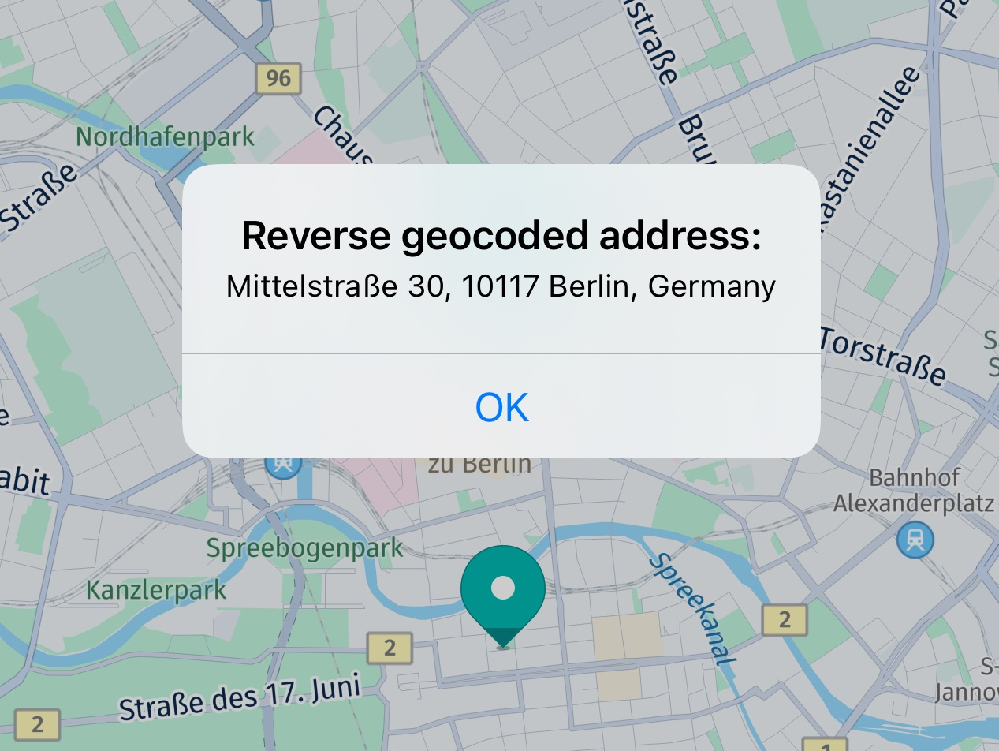
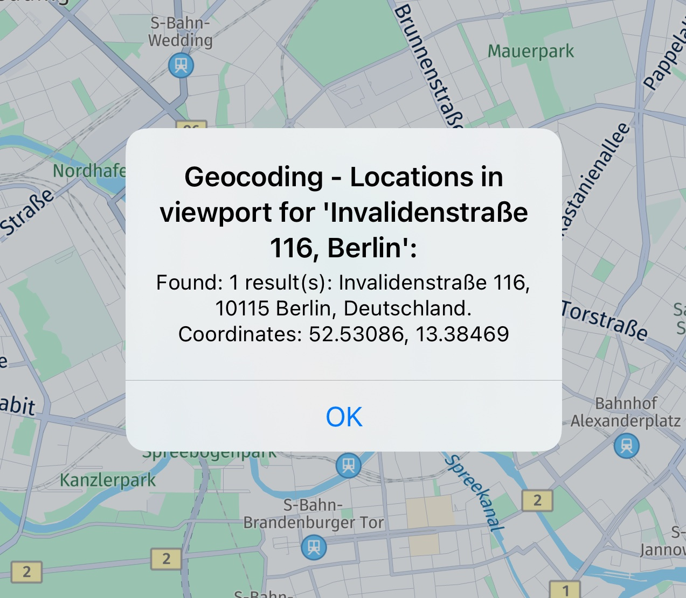
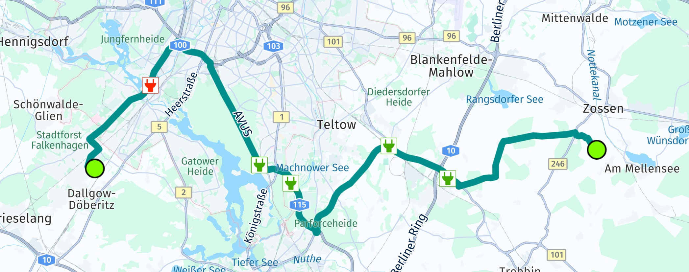

Search & Geocoding features
The HERE SDK offers a comprehensive suite of search and geocoding features that allow you to interact with geographical data seamlessly. Whether you're looking to convert coordinates into human-readable addresses or find locations based on address input, the HERE SDK has you covered.
Reverse geocode an address from geographic coordinates
With the SearchEngine, searching for places at specific locations or areas on the map is straightforward. But what if we only have a location's coordinates? A common scenario involves a user interacting with the map, such as performing a long press gesture, which provides the latitude and longitude of the selected location. While the user can see this location on the map, we lack additional details like the corresponding address information.
This is where reverse geocoding can be helpful.
Our location of interest is represented by a GeoCoordinates instance, which we might get from a user tapping the map, for example. To demonstrate how to "geocode" that location, see the following method:
Future<void> _getAddressForCoordinates(GeoCoordinates geoCoordinates) async {
SearchOptions reverseGeocodingOptions = SearchOptions();
reverseGeocodingOptions.languageCode = LanguageCode.enGb;
reverseGeocodingOptions.maxItems = 1;
_searchEngine.searchByCoordinates(geoCoordinates, reverseGeocodingOptions,
(SearchError? searchError, List<Place>? list) async {
if (searchError != null) {
_showDialog("Reverse geocoding", "Error: " + searchError.toString());
return;
}
// If error is null, list is guaranteed to be not empty.
_showDialog("Reverse geocoded address:", list!.first.address.addressText);
});
}
Similar to the other search functionalities provided by the SearchEngine, a SearchOptions instance needs to be provided to set the desired LanguageCode. It determines the language of the resulting address. Then we can make a call to the engine's searchByAddress()-method to search online for the address of the passed coordinates. In case of errors, such as when the device is offline, SearchError holds the error cause.
Note
The reverse geocoding response contains either an error or a result: SearchError and the result list can never be null at the same time - or non-null at the same time.
The Address object contained inside each Place instance is a data class that contains multiple String fields describing the address of the raw location, such as country, city, street name, and many more. Consult the API Reference for more details. If you are only interested in receiving a readable address representation, you can access addressText, as shown in the above example. This is a String containing the most relevant address details, including the place's title.

Reverse geocoding does not need a certain search area: you can resolve coordinates to an address worldwide.
Geocode an address to a location
While with reverse geocoding you can get an address from raw coordinates, forward geocoding does the opposite and lets you search for the raw coordinates and other location details by just passing in an address detail such as a street name or a city.
Note
Whereas reverse geocoding in most cases delivers only one result, geocoding may provide one or many results.
Here is how you can do it. First, we must specify the coordinates near to where we want to search and as queryString, we set the address for which we want to find the exact location:
AddressQuery query = AddressQuery.withAreaCenter(queryString, geoCoordinates);
SearchOptions searchOptions = SearchOptions();
searchOptions.languageCode = LanguageCode.deDe;
searchOptions.maxItems = 30;
_searchEngine.searchByAddress(query, searchOptions, (SearchError? searchError, List<Place>? list) async {
if (searchError != null) {
_showDialog("Geocoding", "Error: " + searchError.toString());
return;
}
String locationDetails = "";
// If error is null, list is guaranteed to be not empty.
for (Place geocodingResult in list!) {
// ...
}
int itemsCount = list!.length;
_showDialog("Geocoding result: $itemsCount", locationDetails);
});
For this example, we will pass in the street name of HERE's Berlin HQ "Invalidenstraße 116" - optionally followed by the city - as the query string. As this is a street name in German, we pass in the language code deDe for Germany. This also determines the language of the returned results.
Note
Results can lie far away from the specified location - although results nearer to the specified coordinates are ranked higher and are returned preferably.
After validating that the function completed without an error, we check the list for Place elements.
Note
If searchError is null, the resulting list is guaranteed to be not null, and vice versa.
The results are wrapped in a Place object that contains the raw coordinates - as well as some other address details, such as an Address object and the place ID that identifies the location in the HERE Places API. Below, we iterate over the list and get the address text and the coordinates:
for (Place geocodingResult in list!) {
// Note: getGeoCoordinates() may return null only for Suggestions.
GeoCoordinates geoCoordinates = geocodingResult.geoCoordinates!;
Address address = geocodingResult.address;
locationDetails = address.addressText +
". GeoCoordinates: " +
geoCoordinates.latitude.toString() +
", " +
geoCoordinates.longitude.toString();
// ...
}
See the screenshot below for an example of how this might look if the user picks such a result from the map. If you are interested, have a look at the accompanying "Search" example app, that shows how to search for an address text and to place map marker(s) at the found location(s) on the map.

Get auto-suggestions
Most often, applications that offer places search, allow users to type the desired search term into an editable text field component. While typing, it is usually convenient to get predictions for possible terms.
The suggestions provided by the engine are ranked to ensure that the most relevant terms appear top in the result list. For example, the first list item could be used to offer auto completion of the search term currently typed by the user. Or - you can display a list of possible matches that are updated while the user types. A user can then select from the list of suggestions a suitable keyword and either start a new search for the selected term - or you can already take the details of the result such as title and vicinity and present it to the user.
Note
The HERE SDK does not provide any UI or a fully integrated auto completion solution. Such a solution can be implemented by an application, if desired. With the Suggestion feature you get possible Place results based on a TextQuery: from these places you can use the title text ("Pizza XL") or other relevant place information (such as addresses) to provide feedback to a user - for example, to propose a clickable completion result. However, such a solution depends on the individual requirements of an application and needs to be implemented on app side using platform APIs.
Compared to a normal text query, searching for suggestions is specialized in giving fast results, ranked by priority, for typed query terms.
Let's see how the engine can be used to search for suggestions.
GeoCoordinates centerGeoCoordinates = _getMapViewCenter();
SearchOptions searchOptions = SearchOptions();
searchOptions.languageCode = LanguageCode.enUs;
searchOptions.maxItems = 5;
TextQueryArea queryArea = TextQueryArea.withCenter(centerGeoCoordinates);
// Simulate a user typing a search term.
_searchEngine.suggestByText(
TextQuery.withArea(
"p", // User typed "p".
queryArea),
searchOptions, (SearchError? searchError, List<Suggestion>? list) async {
_handleSuggestionResults(searchError, list);
});
_searchEngine.suggestByText(
TextQuery.withArea(
"pi", // User typed "pi".
queryArea),
searchOptions, (SearchError? searchError, List<Suggestion>? list) async {
_handleSuggestionResults(searchError, list);
});
_searchEngine.suggestByText(
TextQuery.withArea(
"piz", // User typed "piz".
queryArea),
searchOptions, (SearchError? searchError, List<Suggestion>? list) async {
_handleSuggestionResults(searchError, list);
});
The helper method _getMapViewCenter() is left out here, you can find it in the accompanying example app. It simply returns the GeoCoordinates that are currently shown at the center of the map view.
For each new text input, we make a request: assuming the user plans to type "Pizza" - we are looking for the results for "p" first, then for "pi" and finally for "piz." If the user really wants to search for "Pizza," then there should be enough interesting suggestions for the third call.
Please note that the suggestByText()-method returns a TaskHandle that can be optionally used to check the status of an ongoing call - or to cancel a call.
Let's see how the results can be retrieved.
void _handleSuggestionResults(SearchError? searchError, List<Suggestion>? list) {
if (searchError != null) {
print("Autosuggest Error: " + searchError.toString());
return;
}
// If error is null, list is guaranteed to be not empty.
int listLength = list!.length;
print("Autosuggest results: $listLength.");
for (Suggestion autosuggestResult in list) {
String addressText = "Not a place.";
Place? place = autosuggestResult.place;
if (place != null) {
addressText = place.address.addressText;
}
print("Autosuggest result: " + autosuggestResult.title + " addressText: " + addressText);
}
}
Here we log the list items found in Suggestion. If there is no error, the engine will guarantee a list of results - otherwise it will be null.
Not every suggestion is a place. For example, it can be just a generic term like 'disco' that you can feed into a new search. With generic terms, the Suggestion result does not contain a Place object, but only a title - as it represents a text without referring to a specific place. Please refer to the API Reference for all available fields of a Suggestion result.
Note that while the results order is ranked, there is no guarantee of the order in which the callbacks arrive. So, in rare cases, you may receive the "piz" results before the "pi" results.
Search for places categories
Instead of doing a keyword search using TextQuery like "Pizza", you can also search for categories to limit the Place results to the expected categories.
Category IDs follow a specific format and there are more than 700 different categories available on the HERE platform. Luckily, the HERE SDK provides a set of predefined values to make category search easier to use. If needed, you can also pass custom category strings following the format xxx-xxxx-xxxx, where each group stands for first, second and third level categories. While first level represents the main category, third level represents the sub category of the second level sub-category. Each category level is defined as a number in the Places Category System.
As an example, we search below for all places that belong to the "Eat and Drink" category or to the "Shopping Electronics" category:
void searchForCategories() {
List<PlaceCategory> categoryList = [];
categoryList.add(PlaceCategory(PlaceCategory.eatAndDrink));
categoryList.add(PlaceCategory(PlaceCategory.shoppingElectronics));
var queryArea = CategoryQueryArea.withCenter(GeoCoordinates(52.520798, 13.409408));
CategoryQuery categoryQuery = CategoryQuery.withCategoriesInArea(categoryList, queryArea);
SearchOptions searchOptions = SearchOptions();
searchOptions.languageCode = LanguageCode.enUs;
searchOptions.maxItems = 30;
_searchEngine.searchByCategory(categoryQuery, searchOptions, (SearchError? searchError, List<Place>? list) async {
if (searchError != null) {
// Handle error.
return;
}
// If error is null, list is guaranteed to be not empty.
int listLength = list!.length;
// Add new marker for each search result on map.
for (Place searchResult in list) {
// Handle results.
}
});
}
PlaceCategory accepts a String. Here we use the predefined categories eatAndDrink and shoppingElectronics. The String value contains the ID as represented in the places category system. Again, we use the searchByCategory() method of the SearchEngine and pass a CategoryQuery object that contains the category list and the geographic coordinates where we want to look for places.
Search along a route
The SearchEngine provides support for a special search case when you do not want to search in a rectangular or circle area, but instead along a more complex GeoCorridor that can be defined by a GeoPolyline and other parameters.
The most common scenario for such a case may be to search along a Route for restaurants. Let's assume you already calculated a Route object. See the Directions section to learn how to calculate a route.
The HERE SDK provides a GeoCorridor class that allows to determine the search area from the actual shape of the route. This way, only search results that lie on or beneath the path are included.
Below you can see an example how to search for charging stations along a route:
// Perform a search for charging stations along the found route.
void _searchAlongARoute(here.Route route) {
// We specify here that we only want to include results
// within a max distance of xx meters from any point of the route.
int halfWidthInMeters = 200;
GeoCorridor routeCorridor = GeoCorridor(route.geometry.vertices, halfWidthInMeters);
PlaceCategory placeCategory = PlaceCategory(PlaceCategory.businessAndServicesEvChargingStation);
CategoryQueryArea categoryQueryArea = CategoryQueryArea.withCorridorAndCenter(routeCorridor, _hereMapController.camera.state.targetCoordinates);
CategoryQuery categoryQuery = CategoryQuery.withCategoryInArea(placeCategory, categoryQueryArea);
SearchOptions searchOptions = SearchOptions();
searchOptions.languageCode = LanguageCode.enUs;
searchOptions.maxItems = 30;
_searchEngine.searchByCategory(categoryQuery, searchOptions, (SearchError? searchError, List<Place>? items) {
if (searchError != null) {
print("Search: No charging stations found along the route. Error: $searchError");
return;
}
// If error is nil, it is guaranteed that the items will not be nil.
print("Search: Search along route found ${items!.length} charging stations:");
for (Place place in items) {
// ...
}
});
}
As you can see, the GeoCorridor requires the route's GeoPolyline and a halfWidthInMeters. This value defines the farthest edges from any point on the polyline to the edges of the corridor. With a small value, the resulting corridor will define a very close area along the actual route.

At the start and destination coordinates of the route, the corridor will have a round shape - imagine a snake with a certain thickness, but just with round edges at head and tail. Do not confuse this with the shown screenshot above, as we there we simply rendered green circles to indicate start and destination of the route.
For very long routes, internally the search algorithm will try to optimize the search corridor. This can be controlled also on app-side with the halfWidthInMeters parameter - a larger value will decrease the complexity of the corridor and therefore result in less precise results as a trade-off.
If no error occurred, you can handle the Place results as already shown in the sections above.
Note
You can find the full code for this section as part of the "ev_routing_app" example app on GitHub.